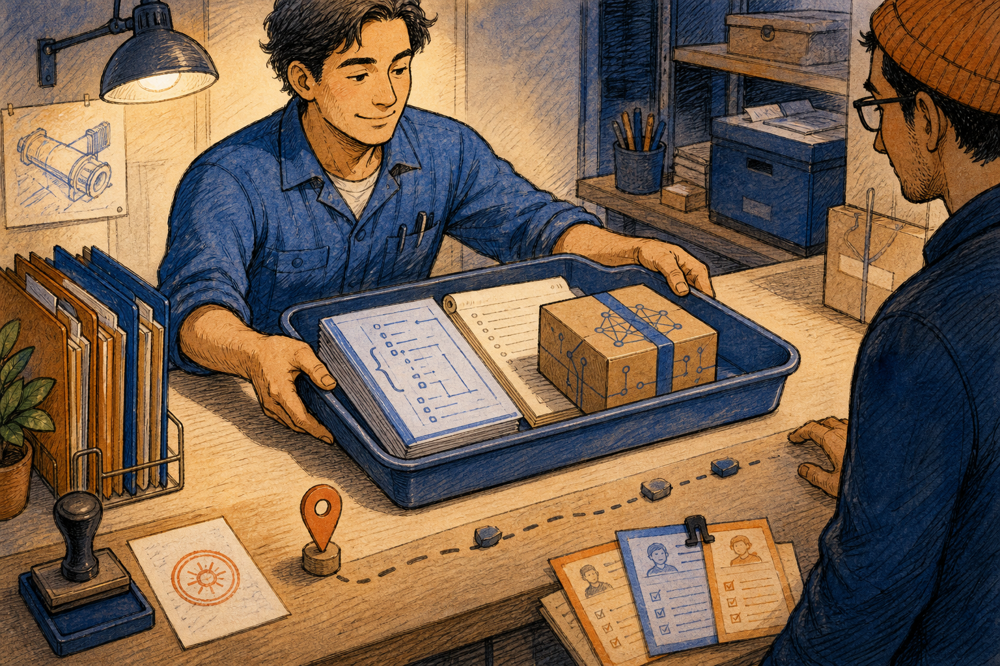

KANDA Reasoner Help
Refactor Report
A local state-vector workbench for scanning a project folder, compiling existing report JSON, writing daily refactor outputs, and saving an AI handoff bundle.
What Problem This Solves
Mode: Creation Pipeline. The previous Refactor Report help was only a basic fallback catalog; this page provides rich Markdown source, rendered HTML, manifest routing, and local raster artwork.
Technical: Refactor Report is registered as the refactor_report lazy tool. The shell loads StateVectorCompiler from the daily refactor report facade. The window builds a canonical state-vector report from either a selected project folder or existing JSON/text input. It can read project files, derive or merge state-vector data, write JSON reports and AI bundles, and refresh extraction; it must not patch source code.
In plain English: Think of a workshop ledger. Mode A brings in the project folders and measures them. Mode B brings in an already-written ledger page. The output folder stores the finished book, and the AI bundle is the boxed copy sent to the next reviewer.
Further reading: Local code: tool_specs.py, daily_refactor_report.py, source_loader_private_impl.py, and the preserved source parts under daily_refactor_report_help. External source categories: Qt for Python widgets, Python json, pathlib, file-dialog behavior, and deterministic artifact writing.
Layout Research Note
This page follows the established KANDA book-help layout: chapter opener, section drawings, technical explanation, plain-English explanation, a dense control table, checklist, authority boundary, and validation rule. No remote CSS, fonts, icons, screenshots, or marketing patterns were added.
Mode A Project Folder Scan
Technical: Mode A is the project-file path. Use Select Project Folder... in the Mode A: from project files area before compiling a fresh report. The tab uses the selected folder as the evidence root and derives a state vector that describes project structure, complexity, dependency shape, governance signals, churn, and refactor pressure. Force Re-extract rebuilds evidence when cached extraction may be stale.
In plain English: Put the right project box on the bench before measuring it. If you scan yesterday's box, a parent folder, or a half-generated workspace, the ledger may look clean while describing the wrong job.
Further reading: Local code: daily_refactor_report.py through the loader source parts. External grounding: Qt folder selection, pathlib.Path, JSON serialization, and read-only source traversal.
Mode B Existing State Vector
Technical: Mode B is the existing-data path. Use it when you already have pasted chat output, a current state JSON, a state history JSON, or a prior bundle that should be loaded, inspected, or compiled again. Load Existing JSON supplies a canonical input file. This mode is for controlled reuse; it should not silently mix unrelated project evidence.
In plain English: Instead of bringing the whole project box back to the bench, you bring a ledger page that was already prepared. That saves time only if the page belongs to this project and this date of review.
Output JSON And AI Bundle Path
Technical: Output JSON is the report identity and storage target. The Choose Folder control selects where the daily refactor output tree should be written. AI Bundle Path is optional: if unset, the tool uses its default daily_refactor/bundles location; if set with Set Bundle Path..., the final AI handoff JSON is written to that exact file path. Clear removes that override.
In plain English: The report name and folder are the shelf label for the finished ledger. The bundle path is a special shipping address. Use the special address only when another workflow expects the box in that exact place.
Compile, Refresh, And Save Bundle
Technical: Compile State Vector runs the normal report pipeline for the selected mode. Force Re-extract bypasses reusable extraction state so the compiler rebuilds evidence from current inputs. Save Bundle Now writes the AI bundle from the last successful compiled state.
In plain English: Compile makes the ledger. Force Re-extract remeasures the source before writing. Save Bundle Now makes a fresh boxed copy from the ledger already on the desk.
Control Reference
| Area | Control or Artifact | Technical Meaning | In Plain English |
|---|---|---|---|
| Shell | Help | Opens this local rich help page through the lazy-tab shell. | Opens the guide for the report workbench. |
| Mode A | Mode A: from project files | Selects project-folder scanning as the input path. | Bring the project box to the bench. |
| Mode A | Select Project Folder... | Opens a folder picker for the project root to scan. | Choose the exact project box. |
| Step 2 | Output JSON | Report name and output identity used for generated files. | The ledger label. |
| Step 2 | Choose Folder | Selects the output folder for the daily refactor output tree. | Choose the shelf for finished ledgers. |
| Step 2 | Load Existing JSON | Loads an existing state-vector, history, or bundle JSON. | Bring in a ledger page that already exists. |
| Step 2b | AI Bundle Path | Optional exact output file for the AI handoff bundle. | The special shipping address. |
| Step 2b | Set Bundle Path... | Opens a file/path chooser for the bundle override. | Put the boxed copy in a fixed place. |
| Step 2b | Clear | Removes the bundle path override. | Use the normal shipping shelf again. |
| Mode B | Mode B: from pasted text / existing JSON | Uses pasted text or loaded JSON instead of scanning files. | Work from an existing ledger page. |
| Command | Compile State Vector | Runs the normal report compile pipeline. | Write the finished ledger. |
| Command | Force Re-extract | Rebuilds extracted evidence instead of trusting cached state. | Remeasure the project box. |
| Command | Save Bundle Now | Writes a bundle from the last successful compiled state. | Box the current ledger for handoff. |
| Artifact | Daily refactor report JSON | Structured report output used for follow-up review. | The finished ledger. |
| Artifact | AI bundle JSON | Compact handoff artifact for AI review. | The boxed copy for the next reviewer. |
Operating Checklist
- Decide whether this is a fresh project scan or an existing state-vector compile.
- For Mode A, use
Select Project Folder...on the real repository root. - For Mode B, paste or load JSON that belongs to the same project and review date.
- Set a clear
Output JSONname and choose the intended output folder. - Set
AI Bundle Pathonly when a downstream workflow needs an exact file path. - Use
Compile State Vectorfor the normal run. - Use
Force Re-extractafter large refactors, generated-source changes, file moves, or suspected stale cache. - Use
Save Bundle Nowonly after a successful compile.
Authority Boundary

Authority boundary. Refactor Report is a report compiler and handoff packer. It can scan selected project files, parse existing JSON/text, write daily refactor JSON outputs, refresh extraction, and save an AI bundle. It must not edit Python source, approve a refactor plan, delete prior evidence, or imply that a source change happened merely because a report was generated.
Further Reading Map
Shell registration: kanda_reasoner_app/reasoner_tools_gui_shell/tool_specs.py.
Public facade: kanda_reasoner_app/daily_rfctr_report/daily_refactor_report.py.
Implementation loader: kanda_reasoner_app/daily_rfctr_report/daily_refactor_report_help/source_loader_private_impl.py.
Preserved implementation source: daily_refactor_report_source_part_*_private_impl.py.
Fallback help catalog: kanda_reasoner_app/reasoner_tools_gui_help/refactor_report.json.
External grounding: Qt for Python widgets and dialogs, Python pathlib, json, deterministic artifact writing, and file-system path containment.
Validation Rule
The Refactor Report help document must remain local-only: Markdown source, rendered HTML, book-help CSS, local PNG artwork, manifest mapping from refactor_report.json, shell-level Help button ownership, stable Refactor Report title, real Mode A/Mode B control coverage, and no remote resources.